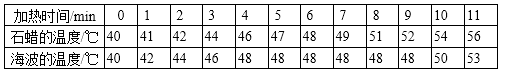
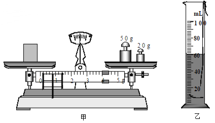
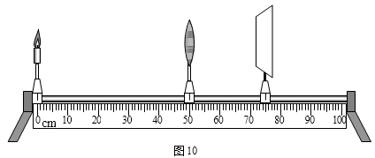

2017年北京市中考物理试题 · 选择题 第21、22、23、24、25题
21．在探究石蜡和海波的熔化规律时，小琴根据实验目的，进行了认真规范的实验，获得 的实验数据如下表所示。则下列四个选项中，判断正确的是

A．石蜡是非晶体
B．海波熔化时的温度是 48℃
C．海波在熔化过程中不需要吸热
D．42℃时，海波的状态是固态
22．中国科技馆有一个“会发电的衣服”的展台，在展台中可以做模拟“发电纤维发电” 的实验。实验过程及现象如下：踩动踏步机踏板，带动压电 薄膜振动，使得一些与压 电薄膜相连的小灯发光；增大踩动踏板的频率，压电薄膜振动得更剧烈，发光小灯的 数量增加。则下列四个选项中，判断正确的是
薄膜振动，使得一些与压 电薄膜相连的小灯发光；增大踩动踏板的频率，压电薄膜振动得更剧烈，发光小灯的 数量增加。则下列四个选项中，判断正确的是
A．压电薄膜振动时可以产生电压
B．小灯发光说明振动的压电薄膜中产生了电流
C．发光小灯的数量与踩动踏板的频率有关
D．增大踩动踏板的频率，压电薄膜发电的总功率变小
23．在测量金属块密度的实验中，小明先将天平放在水平桌面上，将游码放到标尺左端的 零刻线处，调节平衡螺母，使天平横梁在水平位置平衡；小明将金属块放在调节好的 天平左盘内，改变右盘中砝码的个数和游码的位置，使天平横梁在水平位置重新平衡， 右盘中所放砝码及游码在标尺上的位置如图 9 甲所示；然后，小明将系好细线的金属 块放入盛有 50ml 水的量筒中，量筒中的水面升高到如图 9 乙所示的位置。根据实验过 程及现象，下列四个选项中，判断正确的是

A．指针指在分度盘中央刻线处静止时，表明天平横梁在水平位置平衡了
B．金属块的质量为 74g
C．金属块的体积为 60 cm3
D．金属块的密度为 7.4×103 kg/m3
24．小杨做凸透镜成像规律的实验。将焦距为 10cm 的凸透镜固定在光具座上 50cm 刻度线 处，光屏和点燃的蜡烛位于凸透镜两侧，实验前调整烛焰中心、透镜中心和光屏中心 在同一水平高度，如图 10 所示。则下列四个选项中，判断正确的是

A．若蜡烛放置在 10cm刻度线处，移动光屏，在光屏上不能呈现烛焰清晰的像
B．若蜡烛放置在 20cm刻度线处，移动光屏，可在光屏上呈现烛焰清晰放大的实像
C．若蜡烛放置在 35cm刻度线处，移动光屏，可在光屏上呈现烛焰清晰放大的实像
D．若蜡烛放置在 45cm刻度线处，移动光屏，可在光屏上呈现烛焰清晰缩小的实像
25．下列问题中，属于可探究的科学问题的是
A．用“仰仪”这种天文观测仪器观测太阳的位置有什么好处？
B．声波的波长越大，声波的传播速度越大吗？
C．编钟发出的声音的音调高低跟编钟的钟体大小有关吗？
D．家庭电路中电流的频率跟哪些因素有关？